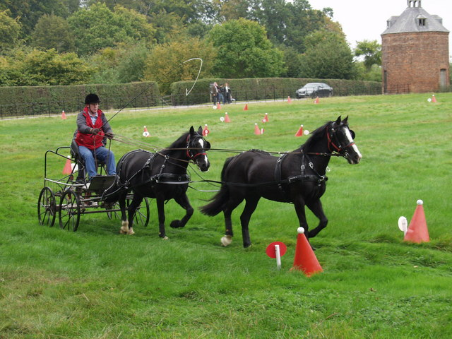

Dos jinetes españoles logran la clasificación para el Mundial de Enganches de Aachen 2026
Antonio Pérez Pedrajas y José Ignacio Solana Martí han asegurado su plaza para el Campeonato del Mundo tras cumplir los requisitos de puntuación establecidos por la FEI en las competiciones clasificatorias internacionales.

El equipo nacional de enganches ya tiene dos representantes confirmados para el próximo Campeonato del Mundo que acogerá la ciudad alemana de Aachen en 2026. Antonio Pérez Pedrajas y José Ignacio Solana Martí han completado con éxito el circuito clasificatorio establecido por la Federación Ecuestre Internacional, alcanzando las puntuaciones exigidas en dos citas de alto nivel internacional: el CAI de Exloo y el CAIO de otra localización destacada del calendario europeo.
Los enganches constituyen una de las disciplinas ecuestres más técnicas y exigentes, en la que la precisión en la conducción de los equipos de caballos resulta determinante. El Campeonato del Mundo representa el máximo nivel competitivo en esta especialidad, reuniendo a los mejores conductores del planeta en una cita que tiene lugar cada dos años y que en esta ocasión regresará a las instalaciones germanas de Aachen, consideradas entre las más prestigiosas del circuito ecuestre internacional.
La clasificación de ambos jinetes supone un respaldo al trabajo desarrollado por el programa nacional de enganches, que ha mantenido presencia constante en las grandes citas internacionales durante los últimos años. El proceso clasificatorio exige a los participantes acumular puntuaciones en competiciones de nivel CAI y CAIO, pruebas que integran el calendario oficial de la FEI y que garantizan el nivel técnico de los binomios que acceden a la fase final del Mundial.
Con estos dos nombres ya asegurados, la representación española en Aachen 2026 comienza a tomar forma a falta de casi dos años para la celebración del evento. El Campeonato del Mundo de Enganches reunirá a las principales potencias de la disciplina en un contexto que históricamente ha brindado a España la oportunidad de medirse con las escuelas clásicas europeas y las nuevas generaciones de conductores emergentes.
— Redacción de Hípica al Día